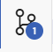
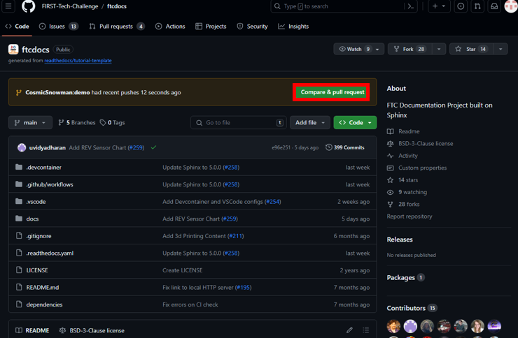
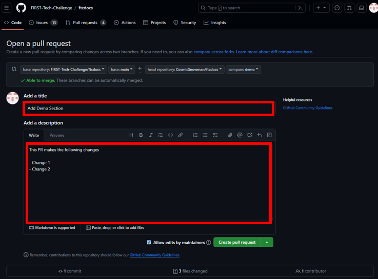
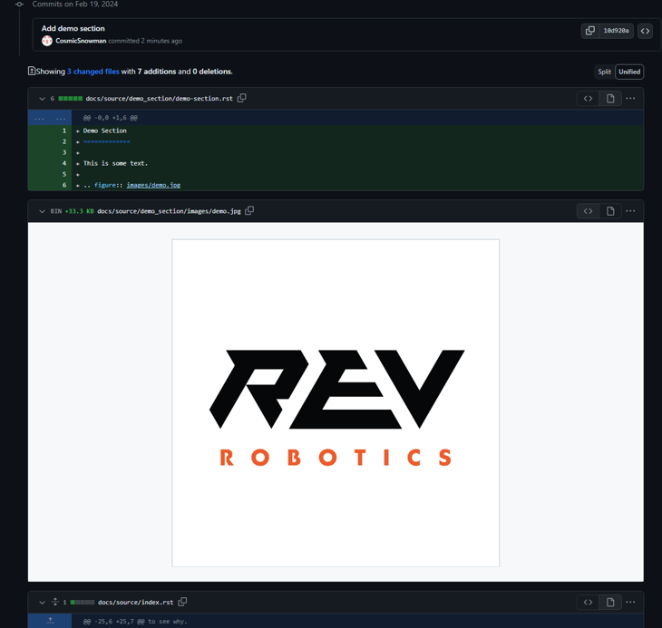
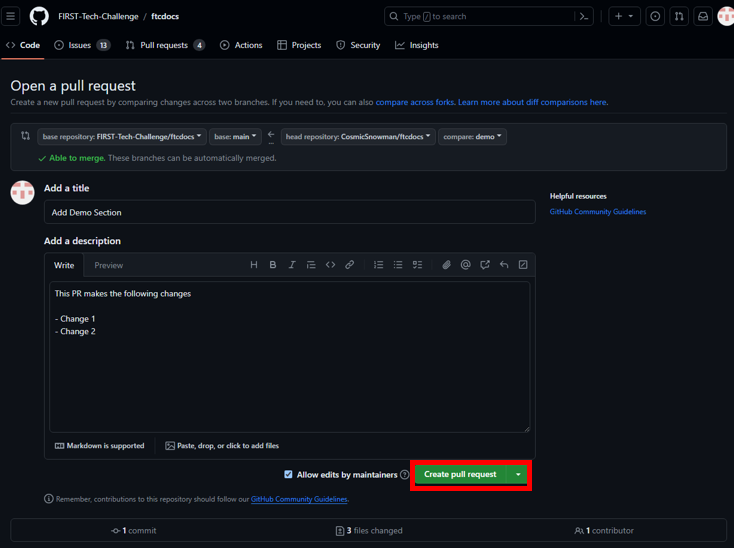
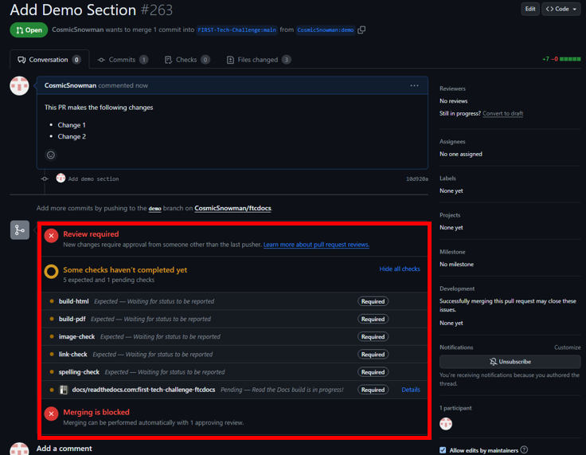
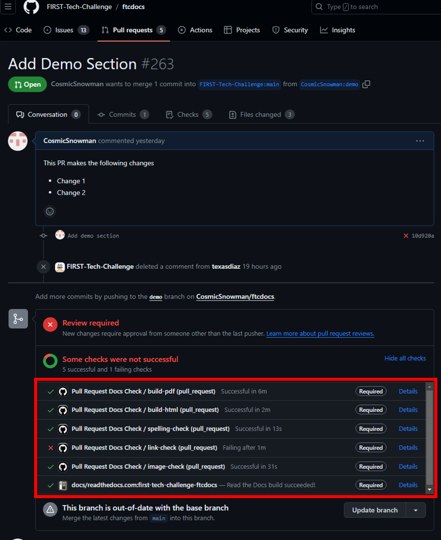
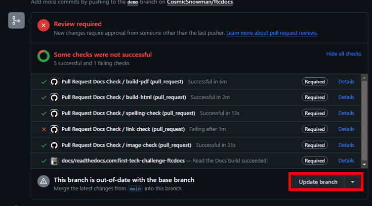
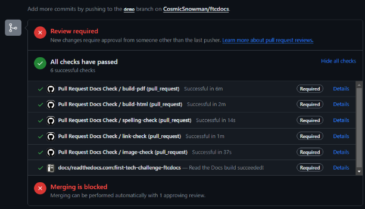

The following diagram shows the workflow for submitting changes to the FTC Docs repository.
For first time users of Git/GitHub, do not worry if this seems confusing. First focus
on understanding the steps and then the workflow will make more sense.
Local changes start in your local copy of the project.
They move from the working directory to local Git staging and are then committed to the local repository.
From there they are pushed to your personal FTC Docs repository.
Codespaces are part of your personal FTC Docs GitHub project.
In a similar manner to local changes, Codespace changes are staged and committed to your personal FTC Docs repository.
Once any changes are in your personal FTC Docs repository they can be submitted as a Pull Request to the FTC Docs repository.
In the FTC Docs repository changes arrive as Pull Requests that are reviewed and approved.
They are then merged with the Main branch and the changes are published.
In a web browser this diagram can be zoomed and panned by using a mouse. Use the scroll wheel to zoom in and out.
Right click and hold then drag to pan. The diagram is not keyboard accessible.
A screen reader will read the various nodes and actions in the diagram and starts in the Local section of the diagram.
flowchart TD
working[Working Directory]
staging[Staging Area]
localrep[Local Repository]
user[Contributor]
subgraph FTCDocs_GitHub
direction RL
main[Main Branch]
ex-branch[Example Branch]
ex-branch<-->|Pull Request|main
end
subgraph Personal_FTCDocs_GitHub
main2[Main Branch]
dm-branch[Example Branch 2]
ex-branch2[Example Branch]
ex-branch2<-->|Pull Request|main2
dm-branch<-->|Pull Request|main2
end
subgraph Local
direction RL
working-->|git add|staging
staging-->|git commit|localrep
localrep-->|git checkout|working
localrep-->|git merge|working
user-->|Changes|working
end
Personal_FTCDocs_GitHub-->|git pull|localrep
localrep-->|git push|Personal_FTCDocs_GitHub
ex-branch2<-->|Pull Request|main
main2<-->|Pull Request|main
FTCDocs_GitHub-->|Fork|Personal_FTCDocs_GitHub
Before getting started, it is important to understand what Git tries to accomplish.
As Git is an incredibly powerful(and complex) tool, this can be difficult and overwhelming.
This tutorial will attempt to simplify this by focusing on the most common use cases.
Git is a version control system (VCS) that allows you to track changes to your files within a repository.
A repository is a collection of files that are being tracked by Git. You can think of a repository as a folder
that contains all of the files that you are working on.
However, Git does not track every change you make to a file.
This is because it would be inefficient to track every change and often distracting. Instead Git tracks changes in
snapshots called commits. Each commit is a snapshot of the changes made to the files in the repository. A commit does
not contain the entire file but only the changes made to the file. This allows Git to be efficient and fast. You can
then think of each commit as a “Git save”.
Before you can commit your changes, we must indicate which files we want to be updated in the commit.
This is done by a process known as staging. Why don’t we just commit all of the changes? Sometimes you may have
changes that you do not want to commit. For example, maybe you deleted a file that you did not mean to delete.
In addition, you may not want to commit build files or other temporary files that are not necessary for the repository.
Note that we have configured Git to ignore build files so you do not have to worry about them.
After you have staged and committed your changes, you can push them to the remote repository. This is the repository that you
see on GitHub. This allows others to see your changes and collaborate with you. You have full control over what changes you
want to push to the your fork of the main repository. In order for your changes to be reflected in the main FTC Docs
website you will need to add your changes to the main repository. This is done by creating a pull request.
As a reminder, staging is the process of indicating which files you want to be included in the next commit (“Git Save”). This
is done by using the Local command gitadd<file>. You can add multiple files by separating them with a space.
In Codespaces click on the source control icon which will display the source control panel.

Click on the + symbol next to each changed or new file in the source control panel to stage that file.
Once you have staged your changes, you can commit them. This is done by using the Local command gitcommit-m"Yourcommitmessage".
You can think of a commit as a snapshot of your changes. Each repository is
a collection of commits each describing incremental changes relative to the previous commit.
In Codespaces enter a commit message in the source control panel and click the Commit button.
Once you have committed your changes, you can push them to your fork of the repository. This is done by using the Local command gitpushorigin<branch>.
This will push your local changes to the remote repository.
This means it will be accessible to others. After this change is pushed, you can create a pull request.
Now that you have pushed your changes to your fork of the repository the next step is propose these changes to the main repository.
Why don’t we just push our changes to the main repository? This is because the pull request allows the maintainers of the main repository to review your changes before they are merged.
This is important as it allows comments and feedback to be given on your changes. For details on how to create a pull request, see the next section.
This option is also available by clicking the “Pull Request” tab and then clicking the “New pull request” button.
Then click compareacrossforks. Select `<USERNAME>/ftcdocs` for the head repository and the branch you want to merge.
Select FIRST-Tech-Challenge/ftcdocs for the base repository and the branch you want to merge into. Then click CreatePullRequest.

Fill out the pull request title and description. For more information on creating a pull request, see our Contribution Guide.

Scroll down to see a preview of the changes you are proposing.
Make sure that everything looks correct and that no files or changes have been omitted.
Also make sure no erroneous changes are included.

If everything looks good, click the CreatePullRequest button.

After this you will be able to see your pull request and the status of the automated checks.
First time contributors will have to wait for a maintainer approval before the checks are run.

After approval the checks will run. In this case the Link Checker failed. When checks fail
the FTC Docs maintainers will be notified and will help you fix the issue.
Generally the FTC Docs team will help you
with the process of passing the checks and updating your branch.

Another problem was because our branch is no longer up to date with the main branch. This can easily
be fixed by clicking the “Update branch” button.

Note
It can take several minutes for the checks to fully run.
Once the checks have passed, the FTC Docs maintainers will review your pull request.
They will provide feedback and help you make any necessary changes. Once the pull request is approved,
it will be merged into the main branch.

This pull request still has a Review Required and Merging is Blocked until there is an approving review.